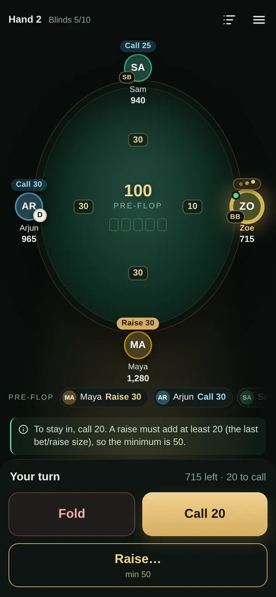
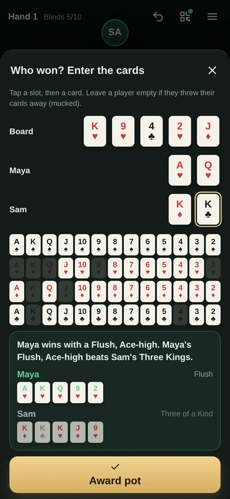
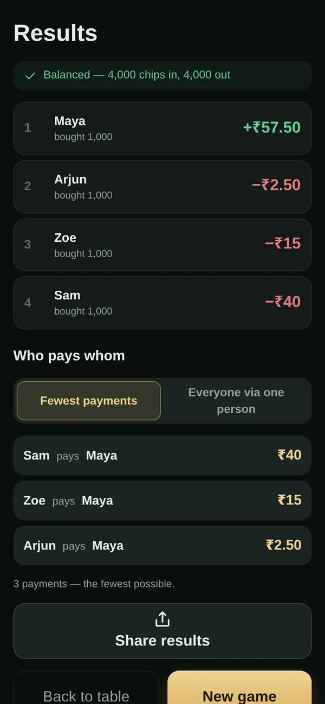

Nobody has to ask “whose turn is it?”
The player to act glows on every phone, and the host's phone can say their name out loud. Every bet pops up over the table and stays on the player as a coloured tag, so a glance tells you what happened while you were looking at your cards.
- Blinds, button and turn order handled for you
- Side pots, all-ins and split pots worked out exactly
- Optional: record the flop, turn and river so every phone shows the board
- Drag players to new seats; the turn order follows


Your stack, in your own hand
Scan, tap your name, and your phone shows your chips, your turn and your buttons. Nothing to install and no sign-up; it's a web page served by the host's phone, about 44 KB in total.
- Private pre-actions: Check/Fold, Call any
- Phone fell asleep? It reconnects to your seat
- Big raises swell, all-ins hit hard, and bets can be read aloud
- Or skip all that and pass one phone around


Fat fingers can't shove
Check or call is one tap. Raises come with presets (2.5×, 3×, half pot, pot) and a slider. Going all-in takes a deliberate press-and-hold, because “oops” shouldn't cost anyone 2,000 chips. And if something does go wrong, Undo is one tap away.
- Minimum raises and short all-ins enforced
- Greyed-out button? Tap it to learn why


Who won? Ask the referee, not the loudest player.
Pick the rank, pick the suit, and Chipless names the winner, lights up the five cards that play, and gives the reason in a sentence. Kickers, split pots and the A-2-3-4-5 straight included.


The 2 a.m. maths, done right
Rebuys are logged as they happen. At the end, Chipless checks that the chips coming out match the chips that went in, then finds the fewest payments. Five players never need more than four.
- Fewest payments, or everyone settles through one banker
- The whole night exports as a readable hand history
- Switching phones mid-game? Save a backup and carry on
